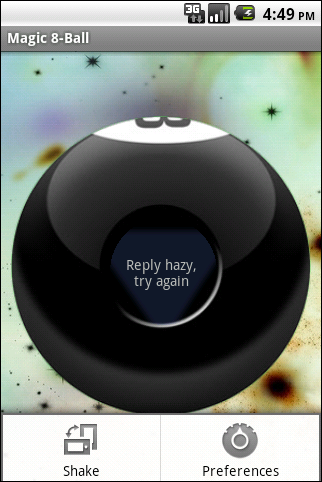
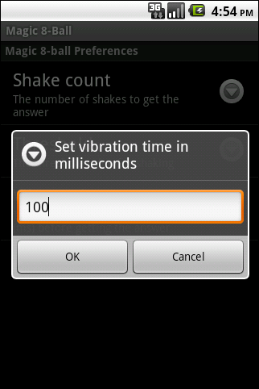

/* Моя кошка замечательно разбирается в программировании. Стоит мне объяснить проблему ей - и все становится ясно. */
John Robbins, Debugging Applications, Microsoft Press, 2000

/* Моя кошка замечательно разбирается в программировании. Стоит мне объяснить проблему ей - и все становится ясно. */
John Robbins, Debugging Applications, Microsoft Press, 2000

Мы напишем программу Шар судьбы (Magic 8-Ball), которому можно будет задать вопрос, потрясти и получить ответ. Небольшая вибрация оповестит нас о том, что тряски достаточно.
Написана по мотивам статьи Шарик, отвечающий на вопросы.
Полная версия исходного кода лежит на google code. Там же можно скачать готовую программу на Google Play
Создадим несколько наборов ресурсов, первый — по умолчанию res/values/strings.xml, а также создадим папку res/values-ru для русской локализации, в которой также будет находиться файл strings.xml, содержащий название приложения, заголовки и ответы магического шара, которые хранятся в массиве responses.
<?xml version="1.0" encoding="utf-8"?>
<resources>
<string name="app_name">Magic 8-Ball</string>
<string name="shake_me_caption">Потряси\nменя</string>
<string name="press_menu_shake_caption">Нажмите\nМеню -\nТрясти</string>
<string name="menu_shake_caption">Трясти</string>
<string name="menu_preferences_caption">Настройки</string>
<string name="preferences_section_title">Настройки Magic 8-ball</string>
...
<string-array name="responses">
<item>Я вижу это\nкак Да</item>
<item>Это\nфакт</item>
<item>Это\nбесспорно\nтак</item>
<item>Наиболее\nвероятно</item>
<item>Перспектива\nхорошая</item>
<item>Знаки\nговорят\nда</item>
<item>Без\nсомнения</item>
...
</string-array>
</resources>
Для фона возьмем картинку с изображением космоса. На нем лежит элемент ImageView с изображением шара, а сообщения будут выводиться с помощью TextView (файл main.xml):
<?xml version="1.0" encoding="utf-8"?>
<FrameLayout xmlns:android="http://schemas.android.com/apk/res/android"
android:layout_width="fill_parent"
android:layout_height="fill_parent"
android:background="@drawable/bg" >
<ImageView
android:layout_width="fill_parent"
android:layout_height="fill_parent"
android:layout_gravity="center_vertical"
android:layout_margin="10px"
android:src="@drawable/eight_ball" />
<LinearLayout
xmlns:android="http://schemas.android.com/apk/res/android"
android:layout_width="fill_parent"
android:layout_height="fill_parent"
android:gravity="center"
android:orientation="vertical" >
<TextView
android:id="@+id/MessageTextView"
android:layout_width="wrap_content"
android:layout_height="wrap_content"
android:layout_gravity="center"
android:layout_marginTop="14dip"
android:background="@drawable/triangle"
android:focusable="false"
android:gravity="center_vertical|center"
android:text="@string/shake_me_caption" >
</TextView>
</LinearLayout>
</FrameLayout>
Реализуем возможность получить ответ с помощью меню. Создадим файл menu.xml в папке res/menu/, который содержит пункты Shake и Preference:
<?xml version="1.0" encoding="utf-8"?>
<menu xmlns:android="http://schemas.android.com/apk/res/android" >
<item
android:id="@+id/shake"
android:icon="@android:drawable/ic_menu_always_landscape_portrait"
android:title="@string/menu_shake_caption"/>
<item
android:id="@+id/preferences"
android:icon="@android:drawable/ic_menu_preferences"
android:title="@string/menu_preferences_caption"/>
</menu>
Для появляющегося ответа будем использовать класс AlphaAnimation, который как нельзя кстати подходит для нашей задачи, позволяя объектам появляться и исчезать, используя alpha-уровень объекта.
private void showMessage(String message)
{
TextView triangle = (TextView) findViewById(R.id.MessageTextView);
triangle.setVisibility(TextView.INVISIBLE);
triangle.setText(message);
AlphaAnimation animation = new AlphaAnimation(0, 1);
animation.setStartOffset(Defaults.START_OFFSET);
triangle.setVisibility(TextView.VISIBLE);
animation.setDuration(Defaults.FADE_DURATION);
triangle.startAnimation(animation);
vibrator.vibrate(Integer.parseInt(preferences.getString(
getString(R.string.vibrate_time_id), Defaults.VIBRATE_TIME)));
}
Перед тем как дать ответ Magic 8-Ball завибрирует на время VIBRATE_TIME, взятое из настроек (о них ниже). По умолчанию это значение равно 250мс. Вибрацию с маленькой длительностью (50мс) можно использовать в приложениях как ответную реакцию на действия пользователя. Для корректной работы с классом Vibrator нужно не забыть объявить uses-permission в файле AndroidManifest.xml:
<uses-permission android:name="android.permission.VIBRATE" />
Класс MenuInflater используется для создания объектов Меню из xml-файла. В метод onOptionsItemSelected мы попадаем в момент выбора элемента меню. При нажатии на кнопку Shake, мы получим ответ. Кнопка Preferences предназначена для настроек.
@Override
public boolean onCreateOptionsMenu(Menu menu) {
MenuInflater menuInflater = getMenuInflater();
menuInflater.inflate(R.menu.menu, menu);
return super.onCreateOptionsMenu(menu);
}
@Override
public boolean onOptionsItemSelected(MenuItem item) {
switch (item.getItemId()) {
case R.id.shake:
showMessage(getAnswer());
return true;
case R.id.preferences:
startActivity(new Intent(this, Preferences.class));
return true;
}
return false;
}
Для взаимодействий с сенсором нам нужно имплементировать интерфейс SensorEventListener. У него объявлены два метода:
Еще один немаловажный момент — чтобы работать с сенсором нам нужно его найти и зарегистрироваться у SensorManager.
sensorManager = (SensorManager)getSystemService(Context.SENSOR_SERVICE);
sensor = sensorManager.getDefaultSensor(Sensor.TYPE_ACCELEROMETER);
Заметим, что мы получаем сенсор с атрибутом Sensor.TYPE_ACCELEROMETER, это означает, что данные приходящие в метод onSensorChanged будут в единицах ускорения (м/с^2). Значениям по трем осям X, Y и Z будут соответствовать значения event.values[0], event.values[1], event.values[2] класса SensorEvent.
public void onSensorChanged(SensorEvent event)
{
if (event.sensor.getType() == Sensor.TYPE_ACCELEROMETER)
if (isShakeEnough(event.values[0], event.values[1], event.values[2]))
showMessage(getAnswer());
}
private boolean isShakeEnough(float x, float y, float z)
{
double force = 0.0d;
force += Math.pow((x - lastX) / SensorManager.GRAVITY_EARTH, 2.0);
force += Math.pow((y - lastY) / SensorManager.GRAVITY_EARTH, 2.0);
force += Math.pow((z - lastZ) / SensorManager.GRAVITY_EARTH, 2.0);
force = Math.sqrt(force);
lastX = x;
lastY = y;
lastZ = z;
if (force > Float.parseFloat(preferences.getString(
getString(R.string.threshold_id), Defaults.THRESHOLD))) {
shakeCount++;
if (shakeCount > Integer.parseInt(preferences.getString(
getString(R.string.shake_count_id), Defaults.SHAKE_COUNT))) {
shakeCount = 0;
lastX = 0;
lastY = 0;
lastZ = 0;
return true;
}
}
return false;
}
Временем жизни нашей активности управляет Android, и нам не нужно чтобы наше приложение вибрировало от случайных трясок в кармане, поэтому мы перестаем работать с сенсором, как только приложение становится неактивно. Также, если сенсор не найден, то мы не предлагаем трясти устройство.
@Override
public void onResume()
{
super.onResume();
registerSensorListener();
if (isSensorRegistered())
showMessage(getString(R.string.shake_me_caption));
else
showMessage(getString(R.string.menu_shake_caption));
}
@Override
public void onPause()
{
unregisterSensorListener();
super.onPause();
}
Тестирование на различных телефонах показало необходимость задавать порог силы встряхивания — threshold. Между HTC Wildfire, Motorola Milestone и, например, Highscreen Zeus, это значение отличалось раза в три. Это ставит перед нами задачи:
Воспользуемся для этих целей готовыми классами PreferenceActivity (для отображения настроек) и SharedPreferences (для хранения настроек).
PreferenceActivity — класс, который визуально отображает нам иерархию объектов preference. Он загружает контент из xml-файла методом addPreferencesFromResource. Он автоматически взаимодействует с объектом класса SharedPreferences и сохраняет настройки по указанному ключу. Создадим xml-файл наших настроек и надуем (inflate) наш PreferenceActivity.
<?xml version="1.0" encoding="utf-8"?>
<PreferenceScreen xmlns:android="http://schemas.android.com/apk/res/android" >
<PreferenceCategory android:title="@string/preferences_section_title" >
<EditTextPreference
android:defaultValue="4"
android:dialogTitle="@string/shake_count_dialogTitle"
android:inputType="number"
android:key="@string/shake_count_id"
android:maxLength="1"
android:numeric="integer"
android:summary="@string/shake_count_summary"
android:title="@string/shake_count_title" />
<EditTextPreference
android:defaultValue="2.75f"
android:dialogTitle="@string/threshold_dialogTitle"
android:inputType="numberDecimal"
android:key="@string/threshold_id"
android:maxLength="4"
android:numeric="decimal"
android:summary="@string/threshold_summary"
android:title="@string/threshold_title" />
<EditTextPreference
android:defaultValue="250"
android:dialogTitle="@string/vibrate_time_dialogTitle"
android:inputType="number"
android:key="@string/vibrate_time_id"
android:maxLength="3"
android:numeric="integer"
android:summary="@string/vibrate_time_summary"
android:title="@string/vibrate_time_title" />
</PreferenceCategory>
</PreferenceScreen>
В нашем файле все вложенные элементы — EditTextPreference. Этот класс удобен для показа пользователю диалогового окна с текстовыми полями, в которые можно ввести значения.
Создаем новую активность с настройками (см. Preferences.java) и не забываем указать ее в файле AndroidManifest.xml:
<activity android:name=".activities.Preferences"
android:label="@string/app_name">
</activity>
Теперь, пользователь может менять значения некоторых настроек, а нам осталось начать их корректно считывать. Чтобы получить экземпляр SharedPreferences мы обратимся к методу PreferenceManager.getDefaultSharedPreferences(this). У нас есть ключи по которым мы храним данные, как нам их прочитать? Например, время вибрации, так:
vibrator.vibrate(Integer.parseInt(preferences.getString(getString(R.string.vibrate_time_id), Defaults.VIBRATE_TIME)));
К сожалению, preferences.getInt(...) упорно выдает ClassCastException. Похоже, это связано с тем, что preferences хранятся как строки. Остальные значения считываем по такому же принципу. Изменив значение threshold, мы можем убедиться в том, что нужна различная сила, чтобы растрясти шарик на ответ.
Скриншоты для английской версии
 Подготовлено на основе статьи Пишем Magic 8-Ball для Android